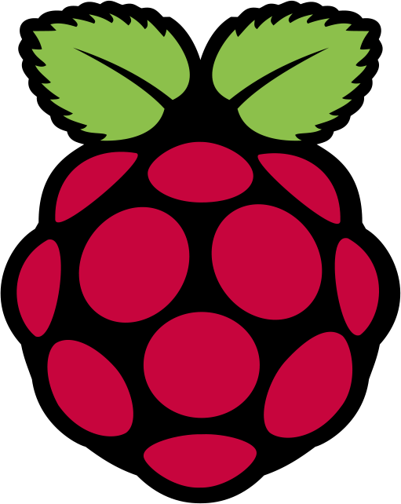

<mat-toolbar color="primary">
  <mat-toolbar-row>
    <button mat-icon-button (click)="sidenav.toggle()" *ngIf="this.authService.isLoggedIn()">
      <mat-icon>menu</mat-icon>
    </button>
    
    <span>RpiControl Portal</span>
    <span class="spacer"></span>
    <div class="tools-container" *ngIf="this.authService.isLoggedIn()">
      <button mat-icon-button>
        <mat-icon>power_settings_new</mat-icon>
      </button>
    </div>
  </mat-toolbar-row>
</mat-toolbar>

<mat-sidenav-container class="root-container">
  <mat-sidenav #sidenav mode="side" [(opened)]="opened">
    <button mat-button class="menu-btn" [routerLink]="['/device-settings']">Device Settings</button><br />
    <button mat-button class="menu-btn" [routerLink]="['/file-explorer']">File Explorer</button><br />
    <button mat-button class="menu-btn" [routerLink]="['/connectivity']">Connectivity</button><br />
    <button mat-button class="menu-btn" [routerLink]="['/terminal']">Terminal</button><br />
    <button mat-button class="menu-btn" [routerLink]="['/about']">About</button><br />
  </mat-sidenav>
  <mat-sidenav-content>
    <router-outlet></router-outlet>
  </mat-sidenav-content>
</mat-sidenav-container>


